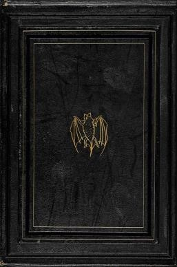
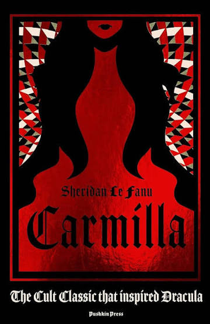

Olá, venho compartilhar minha lista de livros.

Este é um pouco da imensa lista de livros que tenho para mostrar.
Lista de Livros:
Drácula

A obra atemporal de Bram Stoker narra, por meio de fragmentos de cartas, diários e notícias de jornal, a história de humanos lutando para sobreviver às investidas do vampiro Drácula. O grupo formado por Jonathan Harker, Mina Harker, dr. Van Helsing e dr. Seward tenta impedir que a vil criatura se alimente de sangue humano na Londres da época vitoriana, no final do século XIX.
Carmila

Em Carmilla, de Sheridan Le Fanu, o leitor conhece a misteriosa vampira que marcou a literatura do século XIX e serviu de inspiração para a construção de Drácula, de Bram Stoker.
A hipótese do amor

De repente, seu pequeno experimento parece perigosamente próximo da combustão e aquela pequena possibilidade científica, que era apenas uma hipótese sobre o amor, transforma-se em algo totalmente inesperado.